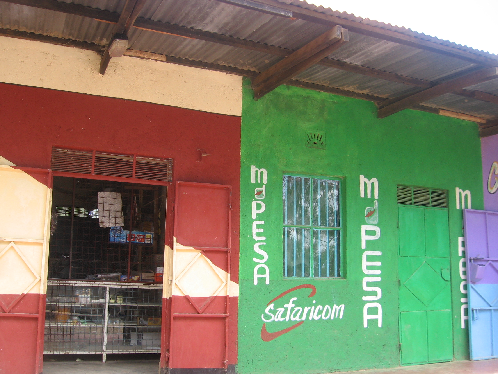
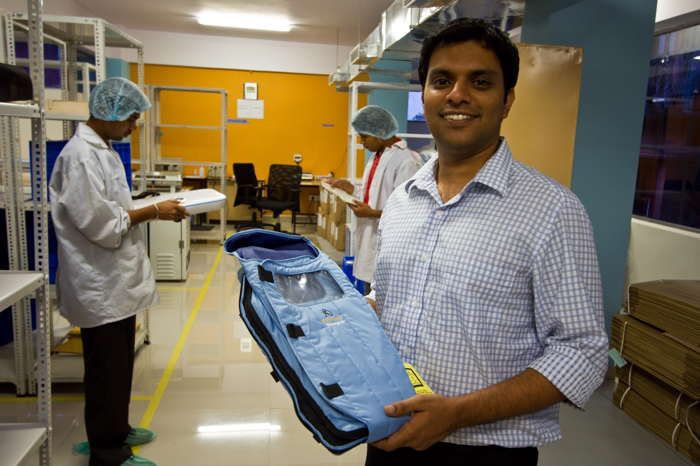
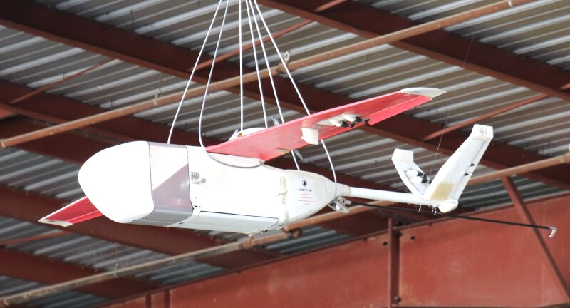

Start here: What makes an innovator?
Brian Gitta had malaria several times as a student. Each diagnosis meant a needle, a blood smear, a wait — and sometimes the result was still wrong. Together with fellow software-engineering students at Makerere University, he asked a question most people never thought to ask: does diagnosing malaria really require drawing blood?
Their answer was Matibabu: a small device that clips onto a finger and uses a beam of light to detect changes that malaria causes in red blood cells. No needle, no lab technician, results in minutes. In 2018 the team won the Royal Academy of Engineering’s Africa Prize for Engineering Innovation — the first Ugandan team to do so.
The Matibabu team were not doctors or professors. They had no special funding and little experience. What they did have: a problem they knew personally, cheap electronics, and the patience to keep trying until something worked.
So if innovation doesn’t require genius, credentials, or money — what does it require?
Myths about innovators
A lot of what we hear about innovators is simply wrong. And the myths do damage: they convince capable people that innovation is someone else’s job.
The myth of the lone genius. Innovation is almost always teamwork. Matibabu was a team. Most famous “lone inventors” had collaborators that history forgot. Different perspectives are not a nice-to-have — they are where new ideas come from.
The myth of the single eureka moment. Ideas rarely arrive in a flash of insight. They start half-formed, get tested, fail, and get revised — often for months or years. What looks like sudden genius is usually long, patient trial and error.
The myth that innovation means inventing new technology. Most innovation is recombination — putting existing pieces together in a new context. Mobile money (M-Pesa in Kenya) invented no new technology: SMS already existed, shop agents already existed. The innovation was the combination. Everything you will build in this course uses off-the-shelf parts.
The myth of “I’m not the inventing type.” This is the most damaging myth, and the one this course aims to break. Technical skill is not the bottleneck — it can be hired, borrowed, or learned (this course takes two days). What is hard to find is someone who knows a real problem from the inside. A nurse who has watched a vaccine fridge fail, or a farmer who has lost a harvest to missed irrigation, knows things no engineer in a distant lab knows.

{kind=link}
What innovators actually do
So what do innovators do differently? Researchers Jeff Dyer, Hal Gregersen, and Clayton Christensen studied thousands of innovators and found five habits they share, which they called discovery skills. These are behaviours, not talents — which means anyone can practise them:
| Skill | What it looks like |
|---|---|
| Questioning | Asking “why?”, “why not?”, and “what if?” about things everyone else accepts. Why does a malaria test need blood? |
| Observing | Watching how people actually work and where things actually fail — in the ward, the field, the queue — rather than how procedures say they should. |
| Networking | Talking to people different from yourself: different professions, different backgrounds, to collect perspectives you don’t have. |
| Experimenting | Building small, cheap tests of an idea instead of debating it. Prototypes are more useful than opinions. |
| Associating | Connecting ideas across fields that don’t usually meet. This is the heart of this course: we will combine medicine × agriculture × electronics. |
You will practise all five during this course: questioning and observing when you evaluate sensors against real use cases, networking when teams form at the mixer, experimenting in every lab exercise, and associating when your team builds something none of you could have built alone.
Problem first thinking
Here is the most common way innovation fails: someone gets attached to a solution — an app, a drone, a gadget — and then goes looking for a problem to justify it.
Innovators work the other way around: start from the problem and stick with it. Solutions are replaceable — if the first one doesn’t work, the problem is still there and still worth solving.
A practical tool for staying problem-first is the “How might we…?” question. It states the problem without committing to any particular solution:
- How might we know that a vaccine fridge failed during the night?
- How might we tell a farmer the soil is dry without them walking to the field?
- How might a patient who cannot speak call for help?
Each of these can be solved in many different ways — and you will be able to prototype several of them by the end of day one.
Before the course starts, write down two problems you have personally seen — in a clinic, a farm, a lab, a market, a home — that a simple measuring or alerting device might address. Phrase each as a “How might we…?” question. Bring them to the course: they are your entry ticket to the project mixer, and the Canvas quiz will ask for them.
Constraints breed creativity
It is tempting to believe innovation happens where money is — in rich labs with expensive equipment. While this can be true, the opposite can also be the case. Tight limits force you to focus on what actually matters, and some well-known inventions came from exactly the settings this course is aimed at:
- The Embrace Infant Warmer. A team of students was challenged to design an incubator at 1% of the usual cost. Instead of starting in the lab, they went and observed — and discovered the real problem: donated incubators sat unused in cities while babies died in villages, far from any electricity. Their answer was a tiny sleeping bag with a heat-storing wax insert, no continuous power needed.

{kind=link}
- William Kamkwamba was fourteen when famine forced him out of school in Malawi. With a library book, scrap parts, and a bicycle dynamo, he built a windmill that powered lights and a radio in his family’s house. (“The Boy Who Harnessed the Wind” tells the story.)
{kind=link}
- Zipline delivers blood to remote clinics in Rwanda and Ghana by drone, turning deliveries that took hours on bad roads into minutes by air. The constraint — terrain and distance — is precisely what made the solution valuable.

.jpg){kind=link}
What we are trying to tell you: you don’t need a well-funded lab to build something useful. Where equipment is scarce, a cheap microcontroller and a few sensors can solve real problems — often problems that nobody with a big budget is even looking at.
Innovation cultures
Good ideas die quickly in the wrong environment. How a team reacts to ideas matters as much as the ideas themselves.
Harvard researcher Amy Edmondson studied medication errors in hospital teams, expecting the best teams to make the fewest errors. Instead, the best teams reported more errors. The reason: they didn’t actually make more mistakes — they felt safe enough to report them. In weaker teams, errors were hidden, and hidden errors don’t get fixed.
That feeling — I can suggest a half-formed idea, ask a basic question, or admit a mistake without being punished or embarrassed — is called psychological safety, and it is one of the strongest predictors of a team that learns and innovates.
You already know what the opposite sounds like. Every workplace has idea-killing phrases:
“We’ve always done it this way.” · “That will never work here.” · “That’s not your job.” · “Be realistic.”
And there are idea-growing responses you can choose instead:
“Yes, and…” · “What would it take for that to work?” · “Tell me more.” · “Let’s test it.”
Think of a culture you know: a ward, a lab, a class, a team you have been part of. Was it safe to suggest something half-baked? What happened to the last unusual idea someone voiced there? This week, try to do better in your own team.
Brainstorming that actually works
During the course, you will form teams and come up with project ideas. Group brainstorming often goes wrong in predictable ways: the loudest person sets the direction, ideas get judged too early, and the group settles on the first acceptable idea. Four rules prevent most of it:
- Don’t judge yet. While collecting ideas, no evaluating — not even your own. Filtering comes later.
- Go for quantity. You can filter a long list afterwards; you can’t filter ideas that were never said out loud.
- Build on others. “Yes, and…” — add to other people’s ideas instead of shooting them down.
- Write before you talk. Everyone writes their ideas down silently for a few minutes before the discussion starts (this is called brainwriting). It stops the first voice from steering the whole team, and it gets the quiet people’s ideas onto the table.
Bring your two “How might we…?” problems and follow the four rules, and your team will end up with more project ideas than you have time to build — which is a good problem to have.
Now off to learn the tools
The short version of this lecture: what holds innovation back is rarely a lack of genius or money. It is that too few people notice problems and try something. The missing piece is knowing the tools — and that is what the next three lectures cover: what a microcontroller is, how to program one, and what the sensors in your kit can and cannot do.
Sources and further reading
Stories and Examples
- Matibabu: Royal Academy of Engineering, Ugandan innovation wins the Africa Prize for Engineering Innovation (June 2018), and the Africa Prize profile of Brian Gitta
- Embrace infant warmer: developed in Stanford’s Design for Extreme Affordability course (2007) — the brief was an incubator at 1% of the $20,000 standard. See Stanford Magazine, “Baby, It’s Cold Outside”
- William Kamkwamba: Kamkwamba, W. & Mealer, B. (2009). The Boy Who Harnessed the Wind. William Morrow. Also a 2019 film, and his TED talk
- Zipline: medical drone delivery, operating in Rwanda since 2016 — flyzipline.com
- M-Pesa: Jack, W. & Suri, T. (2011). Mobile Money: The Economics of M-PESA. NBER Working Paper 16721
Background on Innovation
- The five discovery skills: Dyer, J., Gregersen, H. & Christensen, C. M. (2009). The Innovator’s DNA. Harvard Business Review, December 2009. Expanded as a book: The Innovator’s DNA (Harvard Business Review Press, 2011)
- Psychological safety and the hospital-error study: Edmondson, A. C. (1996). Learning from mistakes is easier said than done. Journal of Applied Behavioral Science, 32(1), 5–28. Accessible book-length treatment: Edmondson, A. C. (2018). The Fearless Organization. Wiley
- Brainstorming rules: Osborn, A. F. (1953). Applied Imagination. Scribner — the origin of “defer judgment” and “go for quantity”. On brainwriting: Paulus, P. B. & Yang, H.-C. (2000). Idea generation in groups. Organizational Behavior and Human Decision Processes, 82(1), 76–87
Image credits
All photographs in this lecture are from Wikimedia Commons: the M-Pesa shopfront (Realt0n12, CC BY-SA 3.0), the Embrace infant warmer (Madhusudhan Atri / Embrace Innovations, CC BY-SA 3.0), William Kamkwamba’s windmill (Erik (HASH) Hersman, CC BY 2.0), and the Zipline drone (San Diego Air & Space Museum Archives, public domain).
Complete the Innovator quiz on Canvas — it includes submitting your two “How might we…?” problems. Then continue with Lecture 1: Microcontrollers, Sensors, and Actuators.